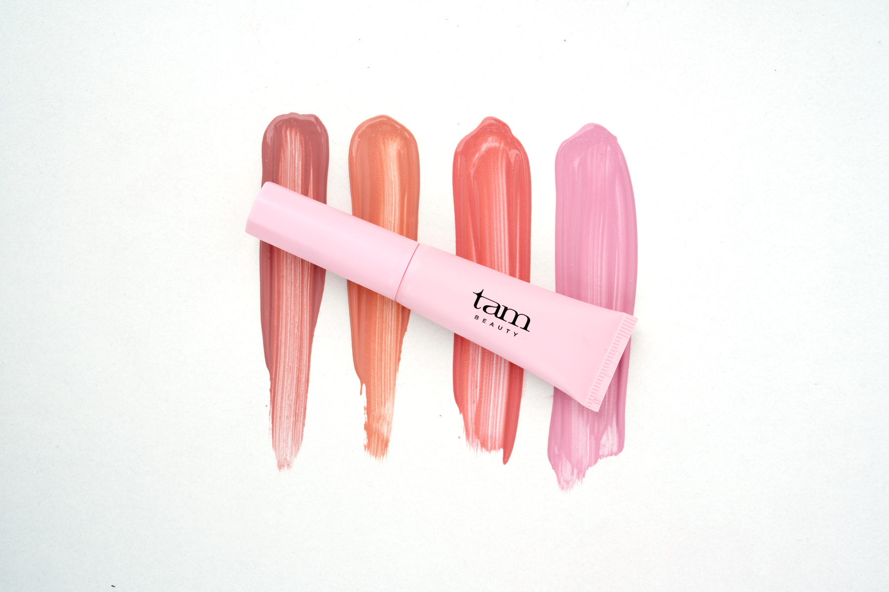

THE JELLY MILKY CHEEK BLUSH
밀키하게 물드는 볼.
은은한 젤리광의 비건 치크.

더 젤리 밀키 치크 블러셔
볼 위에서 만나는
네 가지 컬러.
색감과 은은한 윤기를 함께 비교해 보세요.

01 헬로버니
밀키 핑크

02 썬플러쉬
코랄 핑크

03 누드티
핑크 베이지

04 로지댄스
모브 핑크
피부 톤과 사용량, 조명에 따라 발색이 다를 수 있습니다.

비건 포뮬러에
스킨케어 성분까지.
네 가지 컬러 공통 함유.
- 히알루론산 계열·스쿠알란
- 피부를 부드럽게 하는 스쿠알란*
- 판테놀·알란토인
- 피부 컨디셔닝 성분, 판테놀*
- 세라마이드NP
- 전성분명: 세라마이드엔피
*원료적 특성에 한함.
짜서 바로, 스펀지로 톡톡.
브러시를 꺼낼 필요 없이, 용기 하나로.
ON으로 열기
팁에 소량 짜 주세요.
볼 위에 톡톡
두드리며 펴 발라 주세요.
OFF로 닫기
사용 후 캡을 닫아 주세요.
처음에는 소량,
원하는 색감만큼 덧발라 주세요.
피부 일차 자극 시험 완료.
4가지 컬러 각각 평균 피부반응도
한국피부과학연구원 · 성인 여성 32명
측정기간 2024.11.25 ~ 2024.11.28
24시간 첩포 후 제거 30분·24시간·48시간 평가
시험 조건에 따른 결과이며 개인차가 있습니다.